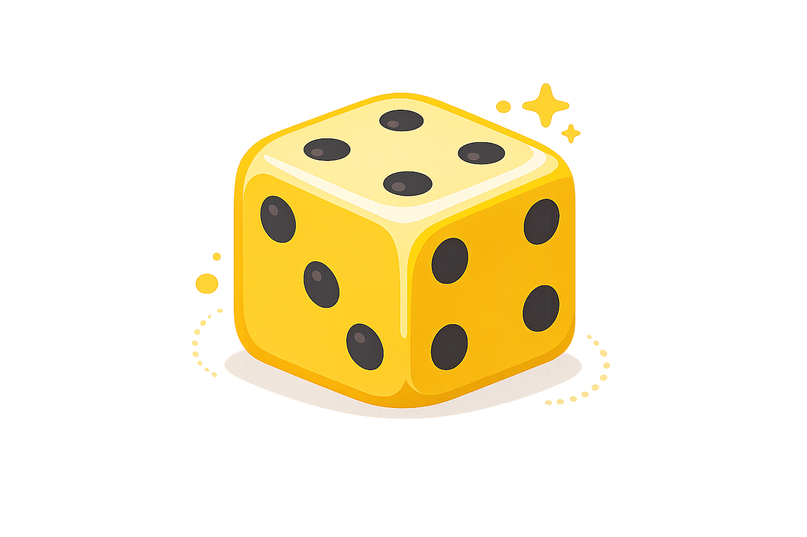

Dados
Lanza uno o varios dados virtuales al instante para juegos en clase, práctica de matemáticas, probabilidad y actividades educativas.
Resultado
🎲 Listo para lanzar...
Consejo: utiliza varios dados para practicar sumas, probabilidad, juegos en clase, decisiones rápidas y retos educativos.